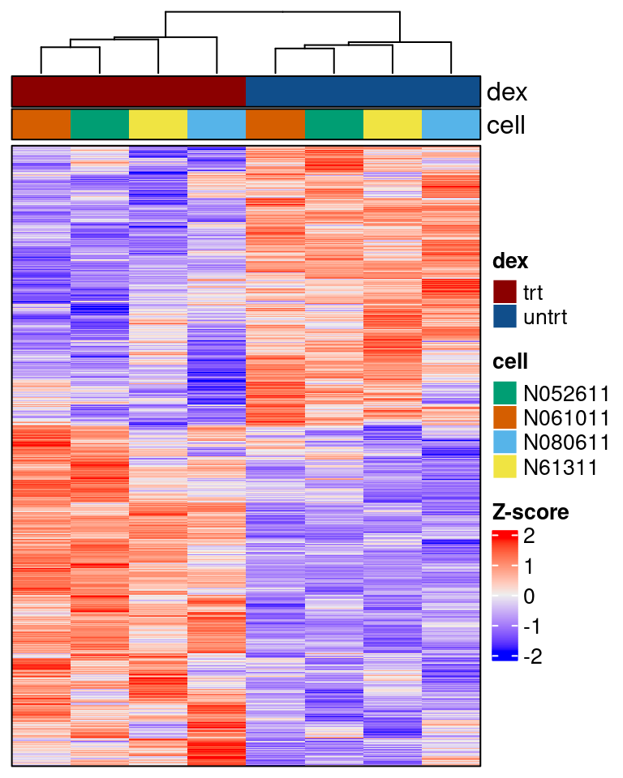
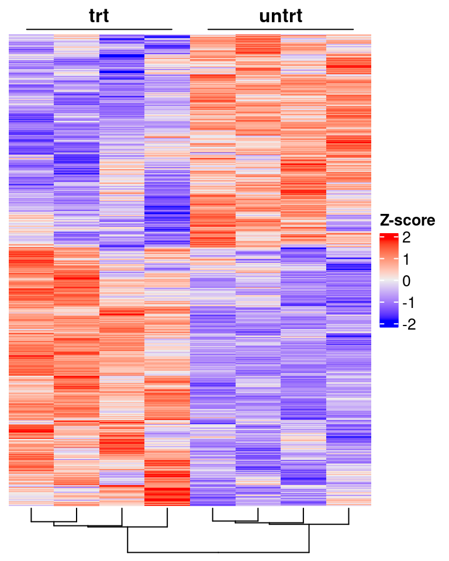
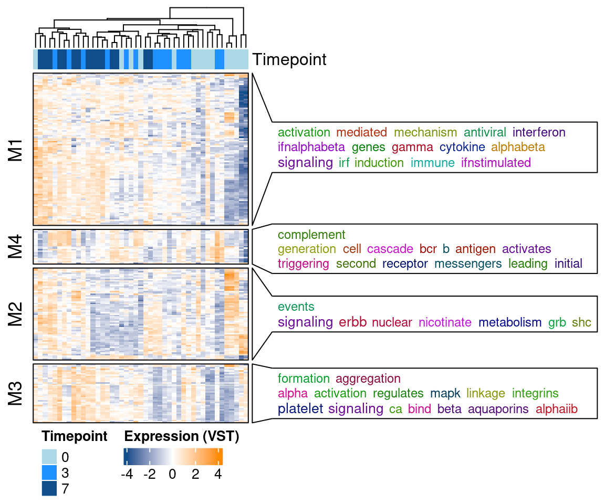
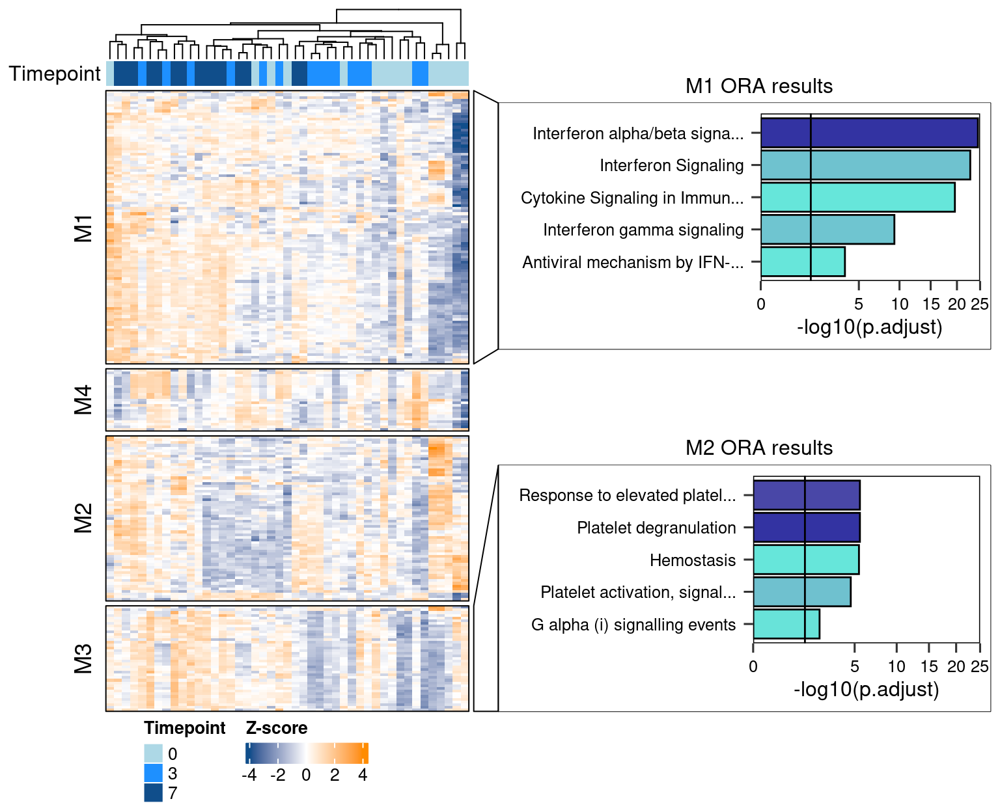

Chapter 3 ComplexHeatmap
3.1 Heatmap examples with airway dataset
3.1.1 Simple counts heatmap
library(airway)
library(DESeq2)
data("airway")
# Perform DEA
dds <- DESeqDataSet(airway, design = ~ cell + dex)
dds <- DESeq(dds, betaPrior=FALSE)## estimating size factors## estimating dispersions## gene-wise dispersion estimates## mean-dispersion relationship## final dispersion estimates## fitting model and testingres <- results(dds, contrast = c('dex','trt','untrt'))
res <- lfcShrink(dds, contrast = c('dex','trt','untrt'), res=res, type = 'normal')## using 'normal' for LFC shrinkage, the Normal prior from Love et al (2014).
##
## Note that type='apeglm' and type='ashr' have shown to have less bias than type='normal'.
## See ?lfcShrink for more details on shrinkage type, and the DESeq2 vignette.
## Reference: https://doi.org/10.1093/bioinformatics/bty895top_anno <- HeatmapAnnotation(df = meta_col[,c("dex","cell")],
col = list(dex = c("trt"="darkred", "untrt"="dodgerblue4"),
cell = c(N052611="#009E73", N061011="#D55E00", N080611="#56B4E9", N61311="#F0E442")),
border = TRUE)
draw(
Heatmap(t(scale(t(mat))), name = "Z-score", border=TRUE,
show_row_names = FALSE,
show_row_dend = FALSE,
show_column_names = FALSE,
top_annotation = top_anno),
merge_legend=TRUE)
Usually with such a simple result (clear two groups) it is better to not use annotations and instead use text annotation
ht = draw(
Heatmap(t(scale(t(mat))), name = "Z-score",
show_row_names = FALSE,
show_row_dend = FALSE,
# split to get titles
column_split = meta_col$dex,
# set dend split invisible
show_parent_dend_line = FALSE,
# set gap to zero for split
column_gap = unit(0, "lines"),
column_title_gp = gpar(fontface="bold"),
show_column_names = FALSE, column_dend_side = "bottom"),
merge_legend=TRUE)
# add annotation lines
decorate_column_title("Z-score", {
grid.lines(x = c(0.1,0.9), y=0.2)
grid.lines(x = c(1.1,1.9), y=0.2)
})
3.2 Complex heatmap plot for CEMiTool results
First lets generate necessary
# Get cemitools object and GMT for pathways
data("cem")
gmt_fname <- system.file("extdata", "pathways.gmt", package = "CEMiTool")
gmt_in <- read_gmt(gmt_fname)
# perform over representation analysis
cem <- mod_ora(cem, gmt_in)
# Perform module enrichment
cem <- mod_gsea(cem)## Warning in fgseaMultilevel(pathways = pathways, stats = stats, minSize = minSize, : There were 1
## pathways for which P-values were not calculated properly due to unbalanced (positive and negative)
## gene-level statistic values. For such pathways pval, padj, NES, log2err are set to NA. You can try
## to increase the value of the argument nPermSimple (for example set it nPermSimple = 10000)## Warning in fgseaMultilevel(pathways = pathways, stats = stats, minSize = minSize, : There were 3
## pathways for which P-values were not calculated properly due to unbalanced (positive and negative)
## gene-level statistic values. For such pathways pval, padj, NES, log2err are set to NA. You can try
## to increase the value of the argument nPermSimple (for example set it nPermSimple = 10000)module_genes <- module_genes(cem)
module_genes <- module_genes[module_genes$modules != "Not.Correlated", ]
exp_mat <- t(scale(t(as.matrix(cem@expression[module_genes$genes,]))))
ora_res <- cem@ora
terms2anno <- ora_res %>% dplyr::filter(p.adjust<0.05) %>% mutate(ID=gsub("_.*", "", ID)) %>%
dplyr::select(Module, ID) %>%
dplyr::filter(Module!="Not.Correlated")
terms2anno <- split(terms2anno$ID, terms2anno$Module)col_scale <- circlize::colorRamp2(breaks = c(-4,0,4), colors = c("dodgerblue4", "white", "darkorange"))
row_annot <- rowAnnotation(`GO ORA` = anno_word_cloud(module_genes$modules,
terms2anno, max_words = 15,
bg_gp = gpar(fill = "white",
col = "black"),
fontsize_range=c(9,11)),
gap = unit(0, "mm"),
show_annotation_name=TRUE)
top_anno = HeatmapAnnotation(Timepoint=gsub(".*._d", "", colnames(exp_mat)),
col = list(Timepoint=c("0"="lightblue",
"3"="dodgerblue",
"7"="dodgerblue4")))
draw(Heatmap(exp_mat, name="Expression (VST)",
split = module_genes$modules,
border=T,
show_row_names = FALSE,
show_column_names = FALSE,
show_row_dend = FALSE,
right_annotation = row_annot,
top_annotation = top_anno,
col = col_scale,
heatmap_legend_param = list(legend_direction = "horizontal")),
merge_legends = T, heatmap_legend_side = "bottom")
We can also add annotation using other plotting tools, such as ggplot2 by generating a custom panel annotating function that uses indexes.
Two of the four modules presented interesting results in the ORA.
We can generate a function that creates Enrichment analysis bar plots for the modules and use that later with anno_zoom().
panel_fun_enr_results = function(index, nm) {
# Get the module for selected indices
mod <- module_genes %>% dplyr::filter(genes %in% rownames(exp_mat)[index]) %>%
.$modules %>% unique()
# Get top 5 hits from the ORA results
res_toplot <- ora_res %>% dplyr::filter(Module %in% mod) %>%
mutate(ID=stringr::str_trunc(ID, 30)) %>%
arrange(p.adjust) %>%
slice_head(n=5)
# Generate the plot
g = ggplot(res_toplot, aes(x = -log10(p.adjust),
y = forcats::fct_reorder(ID, -p.adjust),
fill=FoldEnrichment)) +
geom_bar(stat="identity", alpha=0.8, colour="black") +
theme_bw(12) +
scale_x_sqrt(expand=c(0,0), limits=c(0,25)) +
scale_fill_gradientn(colours=c("turquoise", "darkblue"), breaks = c(0,50)) +
geom_vline(xintercept = -log10(0.05)) +
theme(axis.title.y = element_blank(),
axis.text = element_text(colour="black"),
axis.ticks.length = unit(0.5, "lines"),
axis.line = element_blank(),
panel.border = element_rect(colour = "black"),
legend.title = element_blank(),
panel.grid = element_blank(),
legend.position = "none")
# Make a grob and push it from viewport
g = grid.grabExpr(print(g))
pushViewport(viewport())
grid.rect()
grid.draw(g)
popViewport()
}We can now add the barplots for the indices that we define. In this case for M1 and M3. We can additionally add titles for the annotation boxes separately by pushing grid.text to view port.
To list all available components of the plot for coordinate selection you can use list_components() from ComplexHeatmap.
# interesting module indices
ind_list <- lapply(c("M1", "M3"), function(x) {
# Get genes and positions
genes <- dplyr::filter(module_genes, modules %in% x)$genes
which(rownames(exp_mat) %in% genes)
})
# Generate row annotation
row_annot <- rowAnnotation(`GO ORA` = anno_zoom(align_to = ind_list,
which = "row",
panel_fun = panel_fun_enr_results,
# Set size for the annotation
size = unit(5, "cm"),
width = unit(10.5, "cm")))
# Generate top annotation
top_anno = HeatmapAnnotation(Timepoint=gsub(".*._d", "", colnames(exp_mat)),
annotation_name_side = "left",
annotation_legend_param = list(
Timepoint = list(legend_direction = "horizontal")),
col = list(Timepoint=c("0"="lightblue",
"3"="dodgerblue",
"7"="dodgerblue4")))
draw(Heatmap(exp_mat, name="Z-score",
split = module_genes$modules,
border=T,
show_row_names = FALSE,
show_column_names = FALSE,
show_row_dend = FALSE,
right_annotation = row_annot,
top_annotation = top_anno,
col = col_scale,
heatmap_legend_param = list(direction = "horizontal")),
merge_legends = T, heatmap_legend_side = "bottom", annotation_legend_side="bottom")
seekViewport("annotation_Timepoint_1")
loc1 = deviceLoc(x = unit(1.8, "npc"), y = unit(0, "npc"))
loc2 = deviceLoc(x = unit(1.8, "npc"), y = unit(-14.7, "npc"))
seekViewport("global")
grid.text("M1 ORA results", x = loc1$x ,y = loc1$y)
grid.text("M2 ORA results", x = loc2$x ,y = loc2$y)